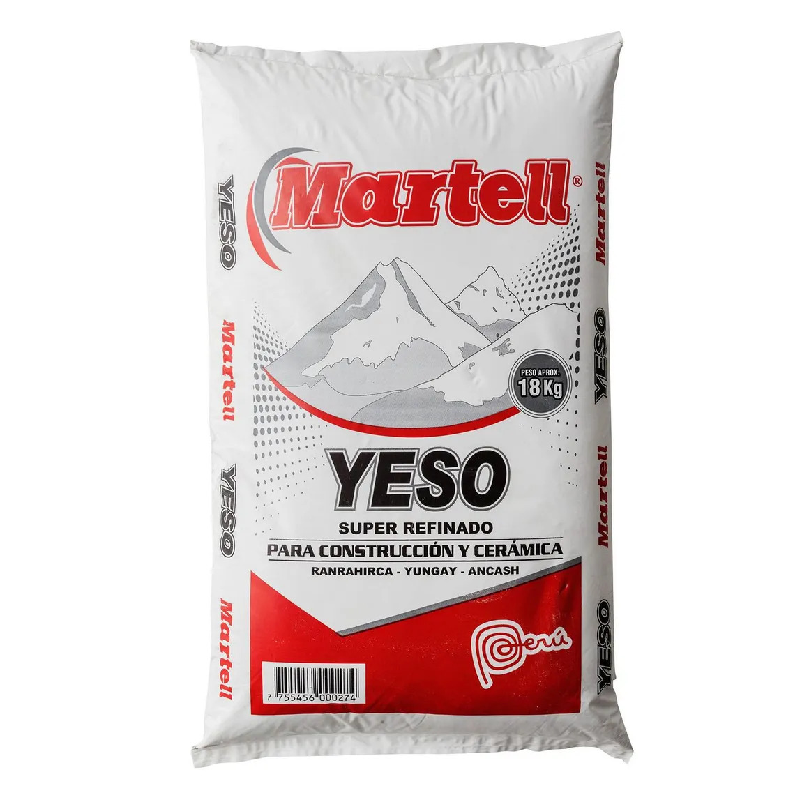

Yeso de obra Martell 18 kg

Material que se mezcla con agua para obtener una pasta empleada en revestimientos, resanes y acabados interiores. Los sacos permiten transportar y almacenar el producto seco.